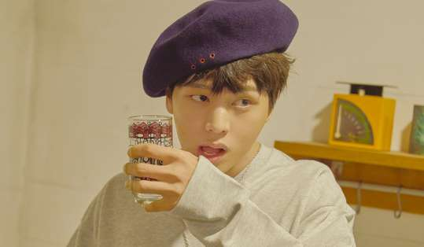

오늘 촬영을 얼마나 기대했는지 몰라요. 실물이 더 멋있다는 이야기를 많이 들었거든요.
아이고~ 과찬이십니다.
그런데 또 못 들으면 섭섭할 것 같아요. 하하하.
요 근래 들었던 말 중에 가장 신선했던 표현은 뭐였어요?
최근에 PD님이 ‘EQ가 높은 것 같다’는 말을 해주시더라고요. 방송할 때 순발력 있게 말하거나 유머 코드 등을 잘 캐치하는 것을 보면 그렇다고. 그런데 솔직히 전 EQ가 높다는 게 뭔지 잘 모르겠어요(웃음).
요즘 <집사부일체>에서 여러 사부를 만나고 있어요. 평소 만나기 어려운 대선배들과 함께 생활해보니 어떻던가요?
윤여정, 전인권 사부님 등 진짜로 접하기 어려운 분들만 만나니 영광이죠. 사부님들의 하루 일상이 어떤 모습인지 곁에서 직접 보며 많이 배우고 있어요. 프로그램을 할수록 어른들을 대하는 예의나 기본적인 인성도 덩달아 성장하는 듯 하고요. 특히 승기 형을 보며 많이 배우고 있죠.